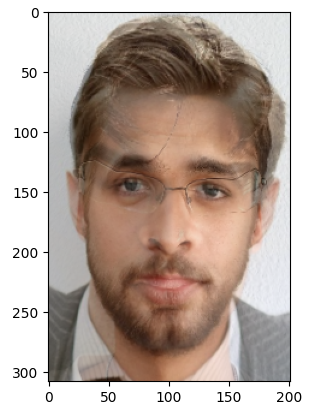
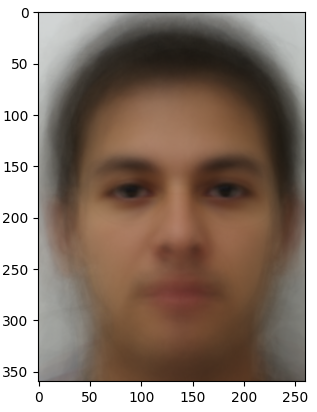
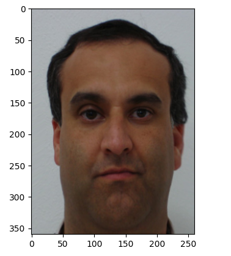
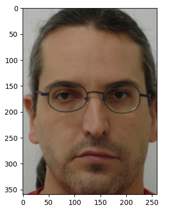
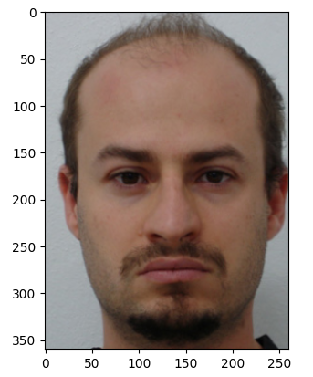
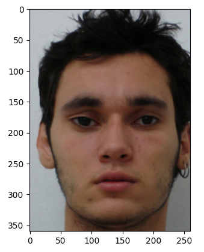
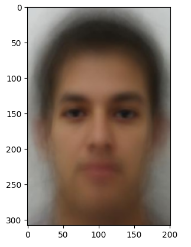
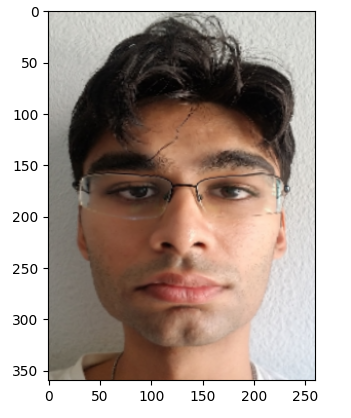
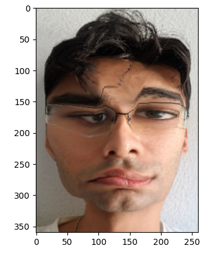
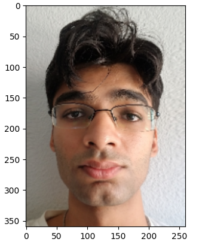

Overview
In this assignment, I accomplished a lot of image handling and morphing via my face, Ryan Gosling’s face, and the faces of many random people on the Internet. From computing an affine transformation matrix to meticulously implementing inverse warping, the images below do a good job at morphing correspondences to create a new face!
Part 1: Shoot the Pictures & Recovering Homographies
Here are some pictures from the rooftop of an apartment.
A homography is a 3x3 matrix which represents a transformation between a pair of images. We can recover a homography by using pairs of corresponding points. The points on the pictures above represent the corresponding points. To implement this function, I went through each pair of points and created a system of equations to obtain the homography matrix’s coefficients, of which there will be 9 values. I then solved it with a least squares solver and reshaped it into a 3x3 matrix.
Part II: Computing the "Mid-Way Face"
To compute the mid way face, there was a lot of intermediate space. First, I wrote a method to calculate the affine transformation matrix using the respective triangle points from one of the images and average points, as well as a function to calculate bilinear interpolation. I then wrote an inverse warping function. This function takes in an image, the points of all the triangles in that image, the points that make up the average triangles of both images, the affine transformation matrix, the resulting image (initially filled with 0s), and an optional index for debugging. First, this function calculates all the points within its respective triangle. Then, I loop over all the points within this triangle and use the affine transformation matrix to calculate the pixel location on the input image. With this location, I use bilinear interpolation to calculate the new RGB value and set it to its respective location in the final input image. Finally, I wrote a compute midway function, which takes in an image, its points, the triangles from Delaunay triangulation, and average points of both images. The function loops over every simplex from Delaunay triangulation, locates the triangle points from the input image and average image, and calculates the affine transformation matrix to pass into inverse warp.
|

Mid way face of Ryan and I
|
Part III: The Morph Sequence
To generate the morph sequence, we take in both images, both images’ points, the triangles, and the warp and dissolve fractions. The function first warps the images into a shape determined by the warp fraction. Then, I run my compute midway function on both images and cross-dissolve the outputs with the dissolve fraction. Finally, I run this function at least 30 times and save the resulting images to output the morph gif below.
|
Morph Sequences of Ryan and I
|
Part IV: The "Mean Face" of a Population
I use the FEI Face Database for this part. I had to implement code to process each image and its points to compute the average face. Morphing the faces into the average face used the previous part’s function. I also had to recalculate the points on the faces and my face with each other's respective geometries as seen below.
|

Average Face of Image Set
|
|
Image 4A
|

Image 4A Warped into Average Shape
|
|
Image 5A
|

Image 5A Warped into Average Shape
|
|
Image 6A
|

Image 6A Warped into Average Shape
|
 Image 7A
Image 7A
|

Image 7A Warped into Average Shape
|
|

Average face warped into my geometry
|

My face warped into average geometry
|
Part V: Caricatures: Extrapolating from the Man
I used different values to extrapolate from the average face and morph it into mine. The positive alpha value as shown below best represents the type of caricatures we’ve come to know. I use the formula of alpha times my points plus one minus alpha times the average points.
|

Alpha = 1.5
|

Alpha = -0.5
|
Bells & Whistles: Make a Morphing Music Video
I chose to make a morphing music video with my roommates. The music used is the great "Perfect Timing" by Shedeur Sanders.